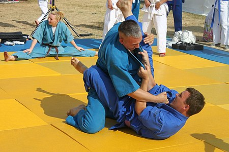

Кудо (яп. 空道) или дайдо дзюку, дайдо джуку) (яп. 大道塾) — современное полноконтактное боевое единоборство, созданное в 1981 году мастером восточных единоборств Адзумой Такаси на основе его знаний о карате кёкусинкай, дзюдо, тайском боксе. В настоящий момент кудо — это динамично развивающийся вид спорта, признанный в Российской Федерации и других странах мира, включающий в себя элементы и технические приемы из арсенала карате, дзюдо, английского и тайского бокса, а также других видов боевых единоборств. Кудо как вид единоборств является кандидатом на включение в Олимпийские виды спорта.
После появления в 1981 году нового стиля карате японские журналисты прозвали его «сверхреалистичным», «яростным». Назывался он тогда «Дайдо Дзюку Карате-до». Основатель стиля, японец Адзума Такаси, по образованию философ, и название несет в себе ещё один смысл, созвучный старинной китайской мудрости: «Нет ворот что выводят на Великий путь. Каждый должен построить их в своем сердце и идти к совершенству собственной дорогой, чувствуя эту жизнь в каждом вздохе, преодолевая свои боль и страх, с верой в душе и голой правдой на устах. Как моря омывают сухие берега, оживляя все, к чему касается рука». В 1991 году Адзума Такаси допустил до участия в соревнованиях российского спортсмена — Юрия Пирогова, тем самым открыв для России, а затем и всего мира свой универсальный стиль.
В 2001 году стиль получил своё новое название — «кудо». И в этот раз философ Адзума вложил в название не один дополнительный смысл: дословный перевод наименования «кудо» — «путь открытого сердца» или «путь в пустоте». На самом деле философия пустоты — один из самых важных аспектов японских единоборств. «Кара» в слове каратэ — пустой, «ку» — тоже пустота или пространство. В этом названии и преемственность и развитие нового[3]. Решение о переименовании было принято по нескольким обстоятельствам, важнейшие из которых — желание Международной федерации кудо войти в олимпийское движение как самостоятельный вид спорта и выделиться из стилей карате-до, так как олимпийские организации видят карате только как бесконтактную технику. Этим шагом были сняты разногласия среди последователей стиля в России по поводу правильной транскрипции названия: «Дзюку» или «Джуку». Не отрекаясь от корней, сегодня можно сказать, что кудо — это уже не карате. Это новый вид спорта, со своими правилами, системой подготовки, занявший определённую нишу в ряду единоборств. Одним из главных отличий кудо от карате является отсутствие ката[4]. Вместо них в кудо практикуется отработка ударов и их комбинаций, бросковой и борцовской техники в паре с партнером, как правило, с использованием лап и макивар.
В 1991 году во Владивостоке открылась первая в России секция дайдо-дзюку карате-до. Основатель стиля, Адзума Такаси, посетил Москву, после чего там было открыто зарубежное отделение Федерации кудо. 7 июля 1994 года Управлением юстиции Москвы была зарегистрирована «Московская Федерация Дайдо Дзюку Карате-до».
В мае 1994 года в Москве был организован и проведён «Кубок Москвы», первый в России международный турнир по Дайдо Дзюку. Первая победа российских спортсменов в Японии состоялась в 1996 году, Алексей Кононенко занял 1-е место в своей весовой категории. В 1997 россияне привезли из Японии две золотые медали
(Александр Весельчаков и Алексей Кононенко), однако после этого все чемпионаты Японии по кудо стали закрытыми для иностранцев. В 2004 году была учреждена Федерация кудо России. С 2001 года проводится официальный чемпионат России по кудо, в том же году российские спортсмены заняли две золотые, три серебряные и
две бронзовые медали. Российские кудоисты возглавили судейскую бригаду на 2-м международном турнире «Открытый Кубок стран Балтии», который прошёл в 2003 году и собрал спортсменов из России, Японии, стран Балтии, Азербайджана, Италии, Германии и Польши.

«Восточное боевое единоборство кудо» было внесено в Единый государственный классификатор в 2006 году, а поединки по коэффициентам кудо внесены во Всероссийский реестр видов спорта приложением № 1 к приказу Председателя Росспорта от 17 июля 2003 г. № 560.
Российские спортсмены заняли первое командное место на втором чемпионате мира, завоевав три золотые медали (Ирина Быкова в абсолютной категории, Шамхал Керимов в категории до 250 ед. и Иван Решетников, категория до 260 ед.), три серебряные (Людмила Родионова, абсолютная категория, Василий Шарапов в категории до
250 ед. и Иван Горбатюк в категории до 260 ед.) и три бронзовые (Максим Леоновец, до 230 ед., Андрей Стаценко, до 240 ед. и Денис Жильцов, до 240 ед.). С 2008 года проводится новый общероссийский турнир по кудо — Кубок России. В том же году на втором чемпионате Европы по кудо российские бойцы Алексей Харитонов и
Анатолий Филиппов получают бронзовые и золотые медали, соответственно. На 3-м чемпионате мира в 2009 году сборная России взяла все первые места во всех семи категориях, а Эдгар Колян был признан лучшим бойцом турнира.
I-й кубок мира по кудо прошёл в 2011 году в Москве. 13 января 2013 года Роман Анашкин аттестовался на 6 дан кудо, став первым неяпонцем, получившим такую степень. На Летней Универсиаде 2013 года Федерация кудо России провела демонстрационные мероприятия, направленные на популяризацию кудо. 1 декабря 2013 года в
Москве состоялся первый международный турнир «KUDO CHALLENGE 2013» в абсолютной категории, победителем которого стал Алексей Харитонов.
14 июня 2014 года во Владивостоке проведён I Кубок Азии по кудо, на котором российские спортсмены получили I и II места во всех категориях, и лишь в двух отдали бронзу представителям Японии и Кореи. В 2017 году на Кубке мира по кудо в индийском городе Мумбаи обладателями кубка мира стали: Эдгар Колян 230 единиц;
Игорь Пермин 250 единиц; Адам Халиев 260 единиц; Марат Алиасхабов 270+ единиц. Серебро в категории 240 единиц завоевал Гегам Манавазян. Бронзу взяли Константин Караульных 270 единиц и Светлана Потокова (абсолютная женская категория).